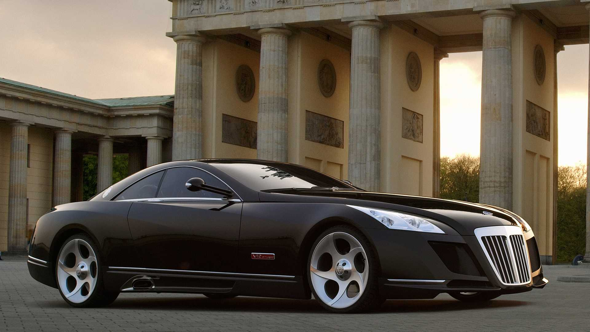
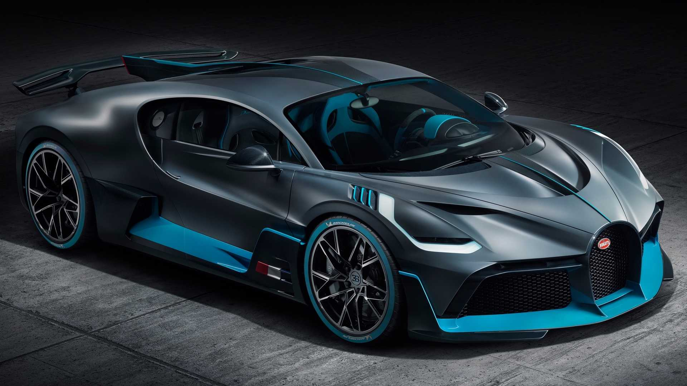
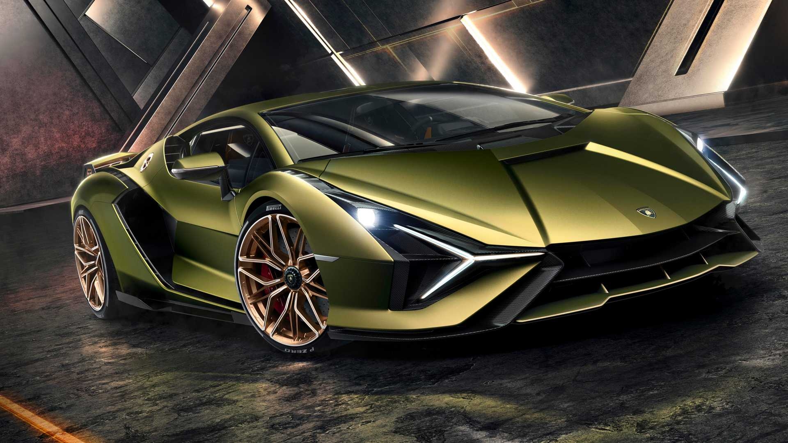
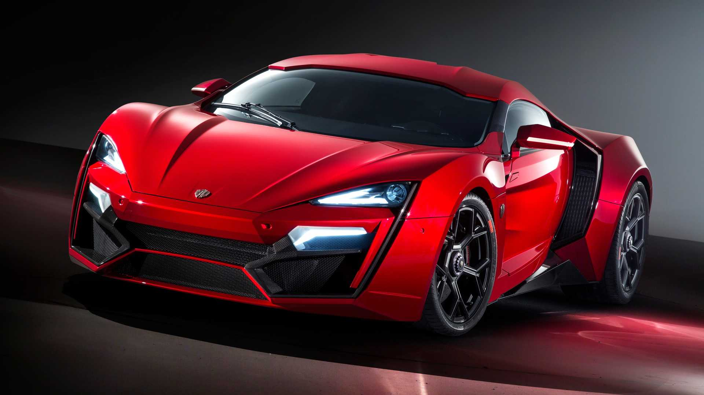
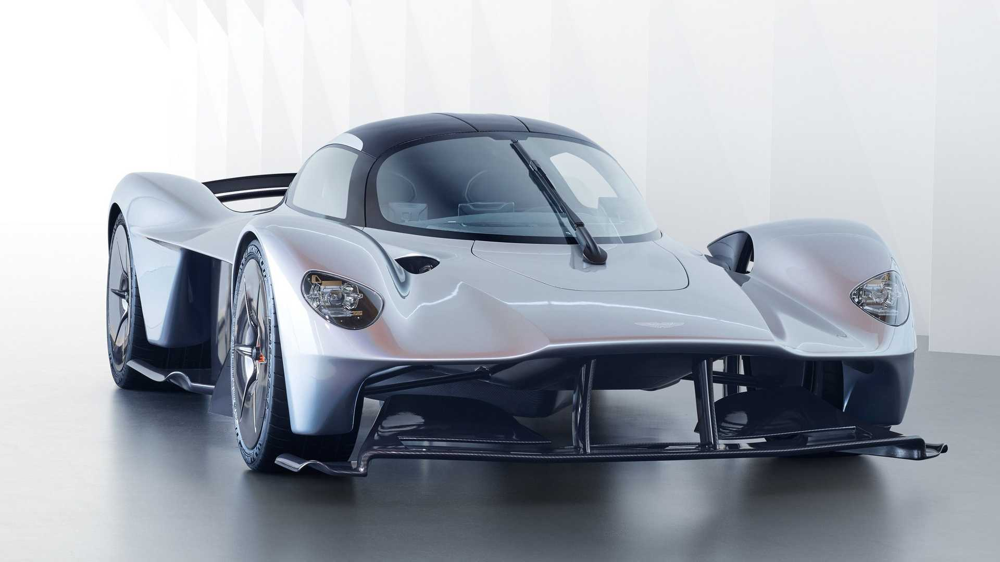
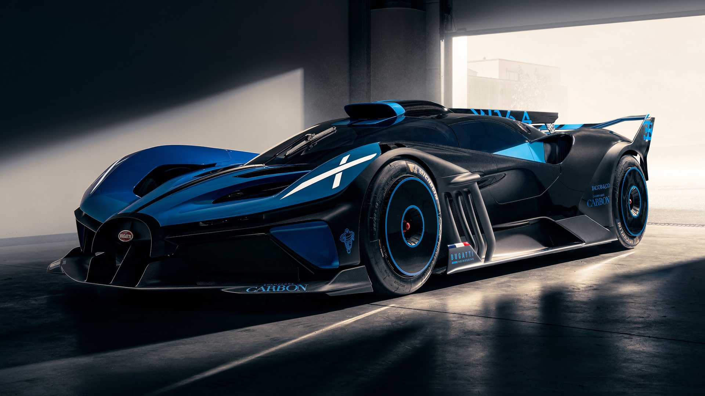
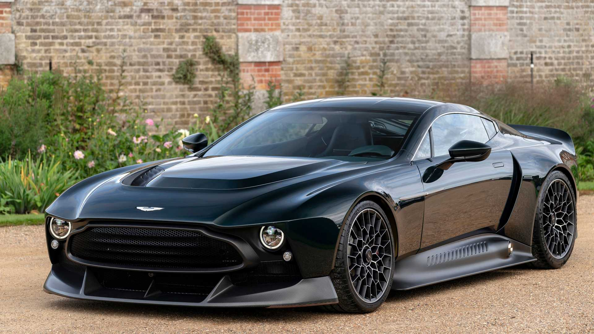
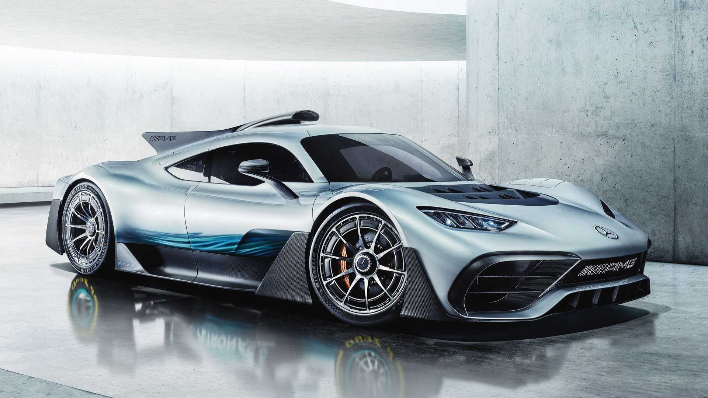
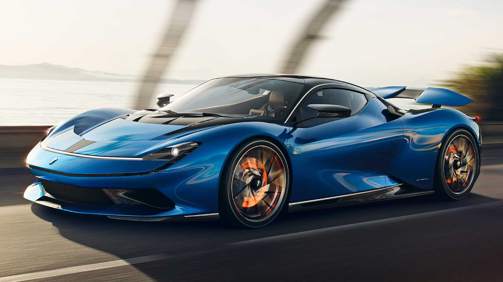
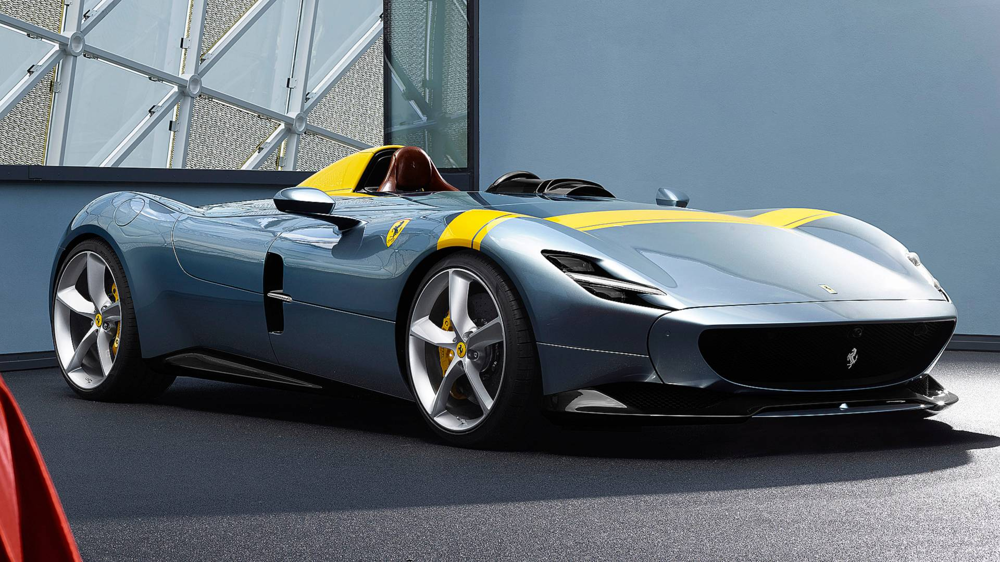

Bugatti Centodieci

Preço: US$ 9,0 milhões (R$ 50.402.700) A Bugatti mostrou o Centodieci em 2019 como um dos carros mais raros e caros do mundo. E não é para menos, pois esta versão moderna do clássico Bugatti EB110 teve apenas 10 unidades produzidas, comemorando o aniversário de 110 anos da marca. Seu estilo único pode não agradar a todos, mas ao menos os bilionários que comprarem este esportivo não precisarão se preocupar em ver um igual elas ruas. Custando quase US$ 9,0 milhões (R$ 50.402.700), o Centodiece é um dos carros mais exclusivos já feitos.
Mercedes-Maybach Exelero
Preço: US$ 8,0 milhões (R$ 44.802.400) Assim como muitos esportivos da lista, o Mercedes-Benz Maybach Exelero é um carro único. Foi feito sob encomenda para a Fulda, uma subsidiária alemã da Goodyear, para testar seus novos pneus, estreando em 2004. A Mercedes fez o Exelero com base em um Maybach e colocou o mesmo motor V12 biturbo de 700 cv e 141 kgfm de torque. A velocidade máxima declarada é de 350 km/h e, ajustando para os valores atuais, o Exelero custaria mais de US$ 10 milhões (R$ 56.003.000).
Bugatti Divo
Preço: US$ 5,8 milhões (R$ 2.481.740) Entre os últimos carros que a Bugatti lançou, o Divo é um dos favoritos do Motor1.com. Divo tem muito mais do que um visual diferente para justificar o preço mais alto. Adicionando rodas mais leves, intercooler de fibra de carbono e removendo um pouco de seu isolamento acústico, a Bugatti fez com que o Divo pesasse 35 kg menos do que o Chiron. Embora tenha os mesmos 1.600 cv de potência, o Divo tem um ajuste aerodinâmico diferente, fazendo com que seja 8 segundos mais rápido na pista de testes de Nardò (Itália). São apenas 40 unidades e a Bugatti vendeu cada uma por US$ 5,8 milhões (R$ 2.481.740).
Lamborghini Veneno

Preço: US$ 4,5 milhões (R$ 25.201.350) A Lamborghini produziu apenas 14 exemplares do Veneno, carro baseado no Aventador e que foi vendido entre 2014 e 2015. Com cada unidade custando cerca de US$ 4,5 milhão, dependendo de como era configurado, já foi o carro mais caro do mundo e ainda detém este título dentro da Lamborghini. Foi vendido nas versões cupê e conversível, usando uma versão mais potente do 6.5 V12 do Aventador, com 750 cv e 95,4 kgfm, que lhe permitia acelerar de 0 a 100 km/h em 3 segundos.
Bugatti Chiron Super Sport 300+

Preço: US$ 3,9 milhões (R$ 21.841.170) Em 2019, a Bugatti voltou a quebrar um recorde de velocidade com uma versão modificada do Chiron, que passou das 300 milhas por hora (483 km/h). O Super Sport 300+ é a versão de produção daquele carro, feito para celebrar a ocasião. Limitado a apenas 30 unidades, o Super Sport 300+ é uma bela versão do Chiron, com uma carroceria fluida e uma linda pintura com duas listras. Apesar de carregar o nome 300 no nome, a versão para vendas teve sua velocidade limitada a "somente" 277 mi/h (446 km/h).
Lamborghini Sian
Preço: US$ 3,6 milhões (R$ 20.161.080) De várias maneiras, o Sian representa uma ponte para o futuro da Lamborghini. Embora seja baseado no Aventado SVJ, este Lamborghini de visual agressivo é o primeiro da marca a contar com uma motorização eletrificada. Além de usar o 6.5 V12 do SVJ, o Sian adota um sistema híbrido-leve de 48V, entregando uma potência total de 819 cv, o que faz com que seja o modelo mais potente que a empresa já fez capaz de andar nas ruas (o Essenza SCV12 tem 830 cv, mas foi feito para andar nos circuitos). Como o número 63 nos dois lados da asa traseira indica, terá apenas 63 unidades, custando US$ 3,6 milhões (R$ 20.161.080).
Bugatti Chiron Pur Sport

Preço: US$ 3,6 milhões (R$ 20.161.080) Um dos carros que roubou o show no Salão de Genebra como nunca aconteceu antes foi o Bugatti Chiron Pur Sport, uma edição especial do esportivo com um foco na aerodinâmica, redução de peso e distribuição de potência. O motor é o mesmo 8.0 W16 quadriturbo de sempre, mantendo os 1.600 cv, porém ele alcança os 6.900 rpm, 200 rpm a mais do que antes, enquanto a transmissão automática foi recalibrada. O Pur Sport ainda conta com uma carroceria revisada, ganhando uma asa traseira maior e uma frente mais aerodinâmica. Produzido desde o final de 2020, é vendido por US$ 3,6 milhões (R$ 20.161.080).
Pagani Huayra Roadster BC

Preço: US$ 3,5 milhões (R$ 19.601.050) Seguindo a velha receita da Pagani, a versão conversível do feroz Huayra BC era inevitável. No ano passado, a marca italiana finalmente apresentou o Huayra Roadster BC, um monstro de 811 cv e 145 kgfm. Curiosamente, ao invés de ser apenas uma variante sem o teto fixo, a Pagani ainda adicionou mais 50 cv em comparação ao cupê, mexendo no motor 6.0 V12 feito pela Mercedes-AMG. Além de ter o prazer de ouvir o glorioso som deste motor sem ter um teto no caminho, os proprietários ainda ficarão felizes em saber que tem um carro ultra-raro, pois a Pagani limitou a produção a apenas 40 unidades, cada uma por US$ 3,5 milhões (R$ 19.601.050).
W Motors Lykan Hypersport
Preço: US$ 3,4 milhões (R$ 19.041.020) Fabricante sediada em Dubai, a W Motors chocou o mundo ao apresentar o Lykan Hypersport em 2013, que até aparecem em Velozes e Furiosos 7. Com faróis de LED dentro de uma carcaça de titânio e coberto com 420 diamantes de 15 quilates, e um painel de instrumentos central hologrático, não é nenhuma surpresa que tenha sido o terceiro carro mais caro do mundo quando foi lançado. Hoje, caiu para a 6ª posição da nossa lista, o que ainda é impressionante. Conta com 791 cv e 132,7 kgfm vindos de seu 3.7 biturbo de seis cilindros.
Aston Martin Valkyrie
Preço: US$ 3,2 milhões (R$ 17.920.960) (estimado) O futuro hipercarro da Aston Martin, o Valkyrie, nem mesmo está nas lojas e já esgotou. Oficialmente, a marca britânica não diz quanto ele custa, mas as estimativas apontam para algo entre US$ 2,6 e 3,9 milhões, com alguns apontando que o valor exato seria algo por volta de US$ 3,2 milhões (R$ 17.920.960). Seja qual for o caso, quem comprar levará um carro impressionante. Seu motor 6.5 V12 feito pela Cosworth produz 1.176 cv e 124,4 kgfm, o que significa que sua velocidade máxima deve passar dos 320 km/h. A fabricante fará apenas 150 unidades do Valkyrie normal e mais 25 da futura versão AMR.
Bugatti Bolide
Preço: US$ 3,0 milhões (R$ 16.800.900) Embora seja certamente o Bugatti de aparência mais selvagem da lista, o Bolide não é o mais caro. Esta versão especial baseada no Chiron tem um preço até que razoável para esta lista, por US$ 3,0 milhões (R$ 16.800.900). Seu motor pode ser o mesmo 8.0 W16 quadriturbo que a marca usa desde o Veyron, porém entregando nada menos que 1.850 cv. Este monstro construído para as pistas promete ser capaz de acelerar a 500 km/h em 20,16 segundos. Terá somente 40 unidades.
Aston Martin Victor
Preço: US$ 3,0 milhões (R$ 16.800.900) O pessoal da Aston Martin sabe muito bem como é fazer um carro exclusivo. Então é difícil não ficar animado com o Victor, o projeto mais exclusivo da marca britânica. Baseado na paltaforma do One-77, o esportivo usa peças de vários outros modelos da Aston Martin, inclusivedo Vulcan (feito apenas para as pistas de corrida) e o futuro hipercarro Valkyrie. Até o motor é especial, com o 7.3 V12 do One-77, porém refeito completamente pela Cosworth para gerar 847 cv e 113,5 kgfm. O mais especial dele é que apenas um foi produzido sob encomenda e o preço, segundo rumores, seria de quase US$ 3,0 milhões (R$ 16.800.900).
Mercedes-AMG Project One
Preço: US$ 2,7 milhões (R$ 15.120.810) Já faz um bom tempo que a Mercedes-Benz promete lançar a versão de produção do hipercarro Project One. Foi anunciado em março de 2017, com o primeiro conceito aparecendo no mesmo ano. Até vimos o protótipo no Salão do Automóvel de São Paulo em 2018. E, cinco anos depois, parece que finalmente será lançado, com mais de 1.200 cv e por US$ 2,7 milhões (R$ 15.120.810).
Pininfarina Battista
Preço: US$ 2,5 milhões (R$ 14.000.750) Nomeado como uma homenagem ao fundador do estúdio, Battista Farina, o Pininfarina Battista entrega o tipo de desempenho (e preço!) que faria o italiano ficar orgulhoso. Revelado no Salão de Genebra (Suíça) em 2019, o Battista é totalmente elétrico e tem "somente" 1.852 cv. Se um supercarro normal parece lento para você, então vai gostar de saber que o Battista vai de 0 a 100 km/h em menos de 2 segundos. A Pininfarina planeja produzir 150 unidades do Battista, cada uma custando US$ 2,5 milhões (R$ 14.000.750).
Bentley Bacalar

Preço: US$ 1,9 milhão (R$ 10.640.570) Um dos esportivos mais exclusivos da lista, o Bentley Bacalar terá somente 12 unidades produzidas, fazendo com que alguns dos carros "limitados" da lista pareçam ter uma produção em série gigantesca. Embora o design opulento seja a primeira coisa a chamar a atenção, o Bacalar não é nada preguiçoso ao falar de performance. Com o famoso motor 6.0 W12 turbo da Bentley, este carro entrega 659 cv e 91,8 kgfm de torque. Se você tiver US$ 1,9 milhão (R$ 10.640.570) sobrando e quiser comprar um, sinto muito mas é tarde demais - a Bentley diz que já entregou todas as unidades para seus compradores.
Ferrari Monza
Preço: US$ 1,7 milhão (R$ 9.520.510) Assim como o McLaren Elva, as Ferrari Monza SP1 e SP2 também apostam em não ter teto ou para-brisa. Como o nome dá a entender, o SP1 tem apenas um assento, enquanto o SP2 tem um segundo banco. Tirando isso, ambos são praticamente iguais, com o mesmo motor 6.2 V12 aspirado, que gera 810 cv. Infelizmente, nunca veremos uma dessas rodando nas ruas, já que não podem ser homologados por causa da falta de para-brisa. Mas, quem quiser comprá-las para usar nas pistas de corrida, terá que pagar US$ 1,7 milhão (R$ 9.520.510)
McLaren Elva

Preço: US$ 1,7 milhão (R$ 9.520.510) O McLaren Elva é um dos últimos esportivos lançados pela marca britânica. Mesmo sem o para-brisa (que são opcionais) ou teto, o Elva ainda tem bom motivos para conquistar os clientes ,com 815 cv vindos de seu motor 4.0 V8 biturbo. Em um primeiro momento, a McLaren anunciou apenas 399 unidades, mas este número acabou reduzido para somente 249 veículos. Ou seja, mais um motivo para poucos conseguirem comprar esta máquina que custa US$ 1,7 milhão (R$ 9.520.510).
Pagani Huayra

Preço: US$ 1,4 milhão (R$ 7.840.420) Sem dúvidas um dos carros mais bonitos da lista, o Pagani Huayra custa US$ 1,4 milhão (R$ 7.840.420) e tem o mesmo problema que a LaFerrari, sendo um modelo de mais idade. Produzido manualmente, o hipercarro teve 100 unidades montadas na versão cupê entre 2012 e 2018, com mais 20 unidades feitas da versão BC (que aparece mais abaixo) entre 2017 e 2019. Todas usam o mesmo motor V12 da Mercedes-AMG, entregando 730 cv.
Ferrari LaFerrari

Preço: US$ 1,4 milhão (R$ 7.840.420) Custando nada menos que US$ 1,4 milhão (R$ 7.840.420), a Ferrari LaFerrari é um dos supercarros mais baratos desta lista, por conta da sua idade - está em um momento em que não é antigo o suficiente para virar raridade, mas também já não é um dos modelos mais atuais da marca italiana. Pode até parecer uma barganha comparado com outros carros mostrados aqui. Apresentado em 2013 com 963 cv e velocidade máxima de 354 km/h, ainda é a Ferrari mais rápida e potente já produzida até agora. Teve somente 499 unidades produzidas até 2016.